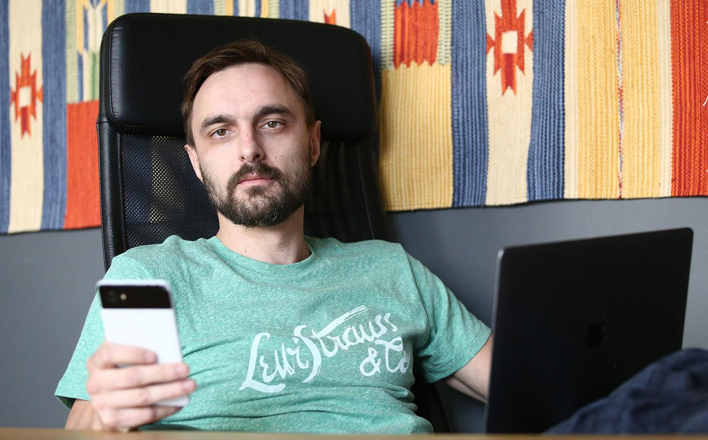

Как мелкий разработчик мобильных приложений попал на ТНТ
И в результате заработал 70 млн рублей
Выпускник исторического факультета МГУ Дмитрий Щипачев всегда интересовался программированием. Он самостоятельно, по учебникам, освоил язык разработки мультимедийных web-приложений Flash. А после окончания университета у него появилась возможность поработать программистом. Отец Щипачева, профессор истории, читал лекции в одном из университетов Лос-Анджелеса. Дмитрий приехал к отцу и нашел работу в web-студии.
Рассказывает, что сделал для работодателя за выходные тестовое приложение и после этого был принят на работу. Дмитрий проработал в Лос-Анджелесе около года, мечтая создать свой стартап. Но бюджет технологического стартапа, по оценкам Щипачева, должен был составлять не меньше $20 000 в месяц, таких денег не было. В 2006 г.
Щипачев вернулся в Россию и стал собирать команду программистов. В 2007 г. он вместе с партнерами открыл web-студию FINCH & Melrose. Однако добиться успеха в России оказалось едва ли не сложнее, чем в США. Более 10 лет понадобилось Щипачеву и Дмитрию Хайретдинову, чтобы пробиться с нуля к крупным «долгоиграющим» заказчикам сайтов и мобильных приложений – ТНТ, «Столото» и футбольному клубу «Спартак» – и зарабатывать десятки миллионов рублей в год на сервисной поддержке. В 2017 г. выручка компании без НДС составила 69,2 млн руб.
«Дом-2»
Вернувшись в Россию, Щипачев устроился программистом в агентство цифрового маркетинга Actis Wunderman. Его совладелец Эдвард Гринбух, узнав о планах Щипачева открыть web-студию, идею поддержал.
С другим партнером – третьекурсником МГТУ им. Баумана Хайретдиновым – Щипачев познакомился на интернет-форуме. Хайретдинов совмещал учебу с работой ведущим программистом в креативном агентстве. Гринбух получил 29%-ную долю в FINCH & Melrose. Щипачев и Хайретдинов стали владельцами 24% FINCH & Melrose каждый, небольшие доли также получили два разработчика. Сначала стартап выступал субподрядчиками Actis Wunderman и дружественных креативных агентств. В новой компании работали шесть программистов, в том числе два одногруппника Хайретдинова.
Первым по-настоящему крупным проектом стал сайт для передачи «Дом-2» на телеканале ТНТ. Менеджеры телеканала обратились в Actis Wunderman, а Гринбух познакомил их с Щипачевым и Хайретдиновым, которые взялись за проект за 2 млн руб., вспоминает Щипачев.
FINCH & Melrose за восемь месяцев сделала для «Дом-2» сайт, где можно было посмотреть телетрансляцию и пообщаться с героями передачи, а затем заключила с телекомпанией договор сервисной поддержки. Представитель ТНТ факт сотрудничества подтвердил, но не раскрыл никаких деталей. В 2008 г. предприниматели надеялись создать для THT еще пять порталов. Но из-за кризиса ни один из этих проектов не был реализован. Других заказов тоже стало меньше. К 2009 г. FINCH & Melrose стало трудно оплачивать аренду офиса и платить зарплаты работникам. Долги компании составляли 2 млн руб. Щипачеву пришлось продать машину, чтобы выплатить зарплаты. Предприниматели были вынуждены закрыть офис и работать из дома.
Выиграть в лотерею
Выжить компании помог оператор лотерей «Столото» – с IT-директорами «Столото» Щипачев и Хайретдинов познакомились через менеджеров THT. По заказу «Столото» FINCH стала разрабатывать сайт для продажи лотерейных билетов. Сумма первого контракта была всего 300 000 руб., дизайн сделала студия Артемия Лебедева, но за первым заказом последовали другие, компания постоянно дорабатывает сайт. Представитель «Столото» факт сотрудничества подтвердил.
А вот проект с ВГТРК закончился неудачно. В 2010 г. Щипачев и Хайретдинов через знакомых вышли на менеджеров ВГТРК, которые занимались интернет-проектами. FINCH создала по заказу телекомпании посвященный внутреннему туризму сайт «Страна.ру», который существует и поныне. Однако, как сказал представитель ВГТРК, примерно через два года телекомпания перестала пользоваться услугами FINCH и передала поддержку сайта своему внутреннему IT-отделу.
К 2013 г. выручка FINCH составляла около 15 млн руб., в штате работало 10 программистов. Однако основатели понимали, что одних web-сайтов, чтобы развиваться, недостаточно, и переключились на мобильные приложения. Щипачеву и Хайретдинову пришлось частично поменять штат программистов – подходящих разработчиков искали в Facebook, Telegram, на hh.ru. Кадры – основное препятствие для роста рынка мобильных приложений, говорит гендиректор агентства Agima Александр Богданов: нужны разработчики приложений со знанием Python и iOS, их не хватает. Средняя зарплата программиста FINCH – 180 000 руб. в месяц, говорит Щипачев.
В начале 2014 г. умер Эдвард Гринбух, и Щипачев и Хайретдинов создали новую фирму – FINCH. Первым крупным заказчиком мобильного приложения стало «Столото» в 2014 г. Поначалу, рассказывает Анна Арановская, руководитель отдела интернет-проектов «Столото», для разработки мобильного приложения «Столото» наняла другого подрядчика, но из-за ошибок в программе отказалась от сотрудничества с ним и отдала заказ FINCH.
В 2014 г. мобильное приложение FINCH заказал старый клиент – THT. Речь шла о приложении «THT-club», которое позволяло зрителям участвовать в платных телевизионных голосованиях. С проектом пришлось помучиться – за шесть месяцев приложение скачали 3 млн пользователей, пришлось переработать программу под высокие нагрузки, вспоминает Щипачев. Тем не менее Щипачев и Хайретдинов говорят, что больше всего усилий они тратят не на разработку, а на поиск идей и улучшений для приложений, которые бы помогали заказчику развивать бизнес.

В клубе болельщиков
В 2015 г. основатели FINCH познакомились с менеджерами, отвечавшими за интернет-проекты, футбольного клуба «Спартак». Павел Швец, заместитель коммерческого директора «Спартака», говорит, что в футбольном клубе слышали о том, что FINCH делала проекты для THT, и это повлияло на выбор. Клуб планировал создать специальный сайт для детей. В тендере принимали участие 15 компаний-разработчиков, в том числе FINCH. Версия сайта, которую предложили Щипачев и Хайретдинов, понравилась больше всего, потому что содержала анимацию, игры и подарки, рассказывает Швец.
В 2016 г. клуб задумался о создании мобильного приложения, из которого можно было бы купить билет на матч, посмотреть спортивные новости и приобрести товары интернет-магазинов, разработку выполнила FINCH, рассказал Швец. Общая сумма контракта на разработку со «Спартаком», по словам предпринимателей, составила 25 млн руб. Дополнительно FINCH занимается поддержкой сайта и приложения. Швец стоимость поддержки не комментирует.
В 2017 г. FINCH выполнила пять проектов, в штате компании было 20 программистов. Выручка в 2018 г. без НДС составит 100 млн руб. FINCH в 10 раз меньше основных игроков рынка, таких как Redmadrobot или Agima.mobile, говорит Алексей Раменский, главный редактор рейтинга российского digital-рынка Tagline. Богданов считает, что FINCH выбрала правильную стратегию – занять нишу проектов для медийных компаний. Они способны обеспечить сотни тысяч и миллионы скачиваний своих мобильных приложений пользователями.
Щипачев и Хайретдинов надеются выйти на крупные банки, это тоже один из основных заказчиков мобильных приложений. Коммерческий директор EPAM Systems Юрий Овчаренко указывает, что в мобильном банкинге множество сложностей: в приложениях регистрируются и физические, и юридические лица, по сложным схемам начисляются бонусные баллы за покупки, а также кэшбэки. Любой банк предпочтет отдать разработку в проверенные руки, уверен Овчаренко.

Меня зовут Дмитрий Хайретдинов, я один из соучредителей в FINCH. Пишите мне, если хотите обсудить проект. Мы умеем работать с банками, футбольными клубами, телеканалами — любыми компаниями, которые хотят работать с большим количеством аудитории.